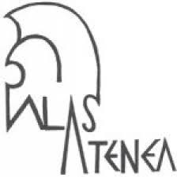
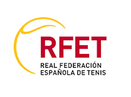

Education
Universidad Carlos III, Madrid

Master in Big Data Analytics (2024 – June 2025)
GPA: 9.1
Relevant Coursework: Mathematics & Statistics for Data Analysis, Business Applications of Big Data Analytics, Machine Learning, Bayesian Learning, Predictive Modeling.
Universidad Autónoma, Madrid
Degree in Mathematics (2020 - 2024)
GPA: 8.2
Relevant Coursework: Probability Theory, Linear Algebra, Mathematical Statistics, Numerical Methods, Optimization, Real Analysis.
IES Palas Atenea
Excellence Program High School Diploma (2018 - 2020)
Real Federación Española de Tenis (RFET)
Certified Tennis Coach
Intensive Training Course at Jonathan Markson Tennis (2019 - 2020)
Title: Monitor Nacional de Tenis